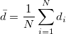

範囲の設定に関する詳細は、入力データを指定するをご覧ください。
- 1番目のデータ範囲
- 最初の標本の列です。
- 2番目のデータ範囲
- 2番目の標本の列です。
- 平均差は次のように計算できます。

- SDは次式で計算します。
}")
- サンプルサイズ
 は
は \,\!") .
.
対応のあるt検定ダイアログボックスを開くには、
詳細な情報
| 再計算 |
分析結果の再計算の設定を変更します。
詳細情報は、 分析結果の再計算をご覧下さい。 |
|---|
対応のあるt検定は、素データと要約データの2つの入力データ形式に対応しています。
| 素データ値 | 列を範囲形式指定します。各列には、因子変数の各水準に対応する応答データが含まれます。
範囲の設定に関する詳細は、入力データを指定するをご覧ください。
|
|---|---|
| 要約データ | サンプルの「平均差、プールされた標準偏差、サンプルサイズ」を mean SD サンプルサイズ という形式で（スペース区切りで）入力します。
|
| 検定する平均 | 検定する仮説平均差（通常は 0）。 |
|---|---|
| 帰無仮説 | 検定される帰無仮説（通常はMean1 - Mean2 = 0）。 |
| 対立仮説 | オプション：
Mean1-Mean2 <> 検定する平均
Mean1-Mean2 > 検定する平均
Mean1-Mean2 < 検定する平均
|
| 有意水準 | 検定の有意水準。 |
| 効果量 | 効果量 Cohen’s d を計算します。これは実際の mean1-mean2 と 検定する平均 の差の大きさを示します。 |
| 信頼区間 | 平均の信頼区間を計算します。
計算の詳細はアルゴリズム：対応のあるt検定を参照してください。 |
| %単位での信頼水準 | 信頼水準 (1 -  )% をスペース区切りで指定します。信頼区間が選択されている場合にのみ使用できます。 )% をスペース区切りで指定します。信頼区間が選択されている場合にのみ使用できます。
|
| 指定した検出力に対する差 | 最小関心差が設定されていない場合、このオプションを使用できます。
指定した検出力レベルに対応する差を出力します。このオプションを選択すると、指定した検出力レベルの設定が、検出力曲線内の検出力レベルに反映されます。 |
|---|---|
| 検出力レベル | 指定した検出力に対する差オプションをオンにした場合、この編集ボックスに検出力水準をスペース区切りで入力できます。デフォルトの検出力水準は 60%、70%、80%、90% です。 |
| 関心のある最小差 | 検定する平均からの最小差を指定します。ここに値を入力すると、検出力解析のグラフに、この差を検出するために必要なサンプルサイズが異なる検出力ごとに表示されます。 |
|---|---|
| 指定された検出力のサンプルサイズ | 関心のある最小差にチェックを付けた場合に使用できます。
指定した検出力レベルに対応する標本サイズを出力します。このオプションを選択すると、指定した検出力レベルの設定が、検出力曲線内の検出力レベルに反映されます。選択しない場合は、デフォルトの検出力レベルが使用されます。 |
| 検出力レベル | 指定した検出力に対する標本サイズオプションをオンにした場合、この編集ボックスに検出力水準をスペース区切りで入力できます。デフォルトの検出力水準は 60%、70%、80%、90% です。 |
| 検定データに基づく検出力 | 関心のある最小差を指定した場合に使用できます。
検定データのサンプルサイズでの検出力を計算します。（帰無仮説が偽であるときに帰無仮説を棄却する確率） |
| 仮説の検出力 | 関心のある最小差を指定した場合に使用できます。
サンプルサイズを変化させた場合の検出力を計算します。このオプションにチェックを付けると、対応する曲線が検出力曲線に追加されます。 |
| 仮説のサンプルサイズ | 関心のある最小差を指定し、仮説の検出力をオンにした場合、このオプションを使用できます。
検出力計算のための仮想サンプルサイズを指定します。 |
| 差のプロット | 平均差に対するボックスチャートとヒストグラムを描画します。 |
|---|---|
| 確率プロット | 確率プロットを出力します。 |
| ボックスチャート | ボックスチャートをプロットします。
Note:データセットに外れ値が検出されると、ボックスチャートの下に脚注として、そのケースを確認するためのメモが表示されます。外れ値を除外したい場合は、脚注の最後にある三角形のボタンをクリックして外れ値をマークし、再計算できます。 |
| ヒストグラム | ヒストグラムをプロットします。 |
| グラフ中に同じ形式のプロットを配列 | ヒストグラムの場合レイヤは縦に並びます。ボックスチャートの場合、レイヤは横に並びます。差のプロット が選択されている場合、このオプションは表示されません。 |
| Note:入力データ形式が要約データの場合、プロットは利用できません。 |
範囲制御についてはこちらを参照してください：出力結果
| 結果ログの出力 |
選択すると結果を結果ログに出力します。 |
|---|---|
| グラフィカル要約レポート | サマリーグラフを作成します。内容には P値バー、効果量バー、差の分布グラフが含まれます。また、統計値を示す結果表がグラフに添付されます。
サマリーグラフの脚注として、これらの統計結果の診断が表示されます。 |
| グラフィカル検出力解析レポート | 検出力曲線を含むグラフィカルな検出力分析レポートを作成します。 出力テーブルと検出力曲線は、検出力解析タブの設定に従います。
検出力曲線グラフの後に検出力解析の診断結果を示す脚注を追加で表示します。検出力の値 80% は一般的に十分と見なされます。 |
| プロットデータ出力 | プロットデータの出力用ワークシートを指定します (Originはプロットの作成時に表形式のデータを生成します)。 |
| 結果出力 | 結果を出力するワークシートを指定します。 |
Note:
|